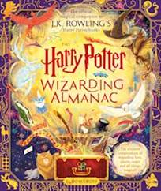
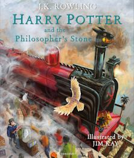

Bloomsbury Publishing Plc.
About Bloomsbury
Bloomsbury Publishing is a leading independent publishing house, established in 1986, with authors who have won the Nobel, Pulitzer and Booker Prizes, and is the originating publisher and custodian of the Harry Potter series. Bloomsbury has offices in London, New York, New Delhi, Oxford and Sydney. Within Bloomsbury’s Academic division, it publishes under Bloomsbury, as well as under a number of prestigious and historic imprint names. Read Our Story for how it all began.
Bloomsbury is the originating publisher and custodian of the Harry Potter series.
Welcome to the home of Harry Potter books! From children's paperbacks to stunning illustrated editions and gorgeous boxsets, magic is only the turn of a page away..
Accessible Editions and Other Languages


The Classic Harry Potter Series
Our mission is to be a creative, entrepreneurial, independent publisher of books, audiobooks and digital content of excellence and originality and to bring these works to a worldwide audience. Our purpose is to inform, educate, entertain and inspire readers of all ages and backgrounds. We champion a life-long love of reading and learning and seek to help build a reading culture with all the benefits which that brings society.
We want to create a working environment that stimulates creativity and collaboration, is respectful of difference, inclusive and ethical in its practice and supports well-being. We are determined to nurture and develop our authors and our employees to their highest potential and know that our success is down to the passion, commitment and hard work of our talented people. We recognize the urgent need to help people from all backgrounds and identities to become part of the global publishing industry, allowing diverse voices to both reflect and shape our culture and society.
We are committed to helping authors, both new and established, to bring original and powerful works across an array of genres and subjects to readers and learners worldwide, sharing ideas, knowledge and experience, and sometimes challenging convention. Our editorial decisions are informed by a belief in the freedom of speech.
Our special interest division was shortlisted for the the British Book Awards’ Publisher of the Year, 2018 (in conjunction with our trade list) and includes the following imprints:
Adlard Coles, BBC Proms, Bloomsbury Caravel, Bloomsbury China, Bloomsbury Continuum, Bloomsbury Wildlife, Bloomsbury Reader, Bloomsbury Sigma, Bloomsbury Sport, Burns & Oates, Helm, Herbert Press, Conway, Green Tree, Osprey Games, Osprey Publishing, Philip Wilson Publishers, Shire Publications, T&A D Poyser, Reeds, Wisden, Bloomsbury Yearbooks.
Shortlisted for Children’s Publisher of the Year 2018 for both the Independent Publishing Group Award and the British Book Awards, our children’s consumer division includes the bestselling authors J.K. Rowling, Michael Rosen, Sarah J. Maas, Debi Gliori, Sarah Crossan, Lucy Worsley, Sibeal Pounder, Louis Sachar and Neil Gaiman. The imprints in the division are Bloomsbury Children’s Books, Bloomsbury YA, Bloomsbury Activity Books.
Our education division incorporates the imprints Bloomsbury Education, Featherstone and Andrew Brodie.
The Academic & Professional division has lifelong learning at the heart of our business, publishing works of excellence and originality to inspire, educate and inform, and believing that intellectual curiosity and educational achievement go hand-in-hand.
The Academic division specialises in the arts, humanities and social sciences, law, business and management, and study skills. It includes Fairchild Books, Hart Publishing, I.B. Tauris, Methuen Drama, The Arden Shakespeare, T&T Clark and Zed Books. In 2021 we acquired Red Globe Press from Macmillan Education Limited, as well as ABC-CLIO.
Bloomsbury Professional leads in UK and Ireland law, tax and accounting.
Bloomsbury Digital Resources provides creative online research and learning environments that deliver excellence and originality.
The division has won the Bookseller Industry Award for Academic, Educational & Professional Publisher of the Year three times: in 2013, 2014 and 2021.
Our products cover a range of disciplines in the Humanities, Social Sciences, Visual Arts, and Performing Arts.
All of Bloomsbury's Digital Resources offer these benefits for institutions:
· No limit on the number of simultaneous users
· Access by IP address, proxy server, Shibboleth, WAYFless URL and other standard authentication methods
· Convenient online account management service
· Support for outbound OpenURL linking from citations
· Digital Object Identifiers (DOIs)
· COUNTER 5 usage statistics
· MARC records at volume level for all book titles
· Institutional logo displayed on interface
· Conforms to accessibility standards for most Level A (Priority 1) and AA (Priority 2) success criteria of the Web Content Accessibility Guidelines (WCAG 2.0) developed by the Worldwide Web Consortium (W3C)
· Promotional materials available